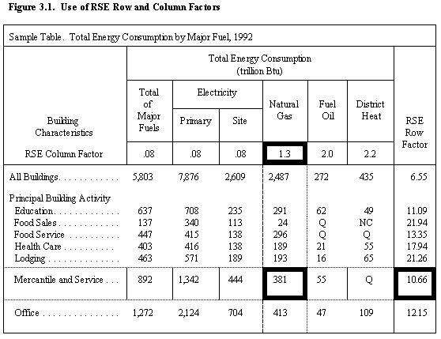

Detailed Tables


The 49 tables present detailed energy consumption and expenditure data for buildings
in the commercial sector. This section provides assistance in reading the tables
by explaining some of the headings for the data categories. It will also explain
the use of row and column factors to compute both the confidence levels of the
estimates given in the tables and the statistical significance of differences
between the data in two or more categories. The section concludes with a "Quick-Reference
Guide" to the statistics in the different tables.
Categories of Data in the Tables
After Table 3.1, which is a summary table, the tables are grouped into the
major fuel tables (Tables 3.2 through 3.13) and the specific fuel tables (Tables
3.14 through 3.29 for electricity, Tables 3.30 through 3.40 for natural gas,
Tables 3.41 through 3.45 for fuel oil, and Tables 3.46 through 3.47 for district
heat). Table 3.48 presents energy management and DSM data as reported by the
building respondent. Table 3.49 presents data on participation in electric utility-sponsored
DSM programs as reported by both the building respondent and the electricity
supplier.
Data in the tables are presented in column categories
(at the top of each table) and row categories
(in the far left column of each table).
Statistical Significance of Data
Row and Column Factors
The tables in this report present estimates for commercial buildings in the
United States. Since the estimates are based on the sample surveyed, they are
subject to sampling error. To help the reader compute an approximate Relative
Standard Error (RSE) for each estimate, the tables provide row factors in the
far-right column and column factors on the top line of each table, except for
Tables 3.15, 3.29, and 3.31, which contain median statistics.
The use of RSE row and column factors is illustrated in Figure 3.1, an excerpt
from Table 3.2 of this report. This table shows that mercantile and service
buildings consumed 381 trillion Btu of natural gas in 1992. Multiplying 10.73
(the row factor) by 1.2 (the column factor) yields an approximate RSE of 12.88
percent.
Standard Errors
To determine the standard error for an estimate in these tables, multiply the
approximate RSE by the estimate. For example, to determine the standard error
of the 381 trillion Btu of natural gas consumed by mercantile and service buildings
in 1992, multiply 381 trillion Btu by .1288 (the approximate RSE). The result,
49 trillion Btu, is the approximate standard error for the estimate.
This value for the standard error can be used to construct confidence intervals
and to perform hypothesis tests by standard statistical methods. However, because
the generalized variance procedure gives only approximate RSE's, such confidence
intervals and statistical tests must also be regarded as only approximate. For
more details about the derivation of the RSE row and column factors, see Appendix
B, "Nonsampling and Sampling Errors."
Confidence Levels
Statistical Significance Between Two Statistics

To View and/or Print Reports (requires Adobe Acrobat Reader) -
Download Adobe Acrobat Reader
If you experience any difficulties, visit our Technical Frequently Asked Questions.
You have the option of downloading the entire set of tables or selected
tables by data item.
Data in Tables 3.2 - 3.13 (Major Fuels) and Tables 3.30-3.40 (Natural Gas)
differ from the April 1995 published report titled "Commercial Buildings Energy
Consumption and Expenditures 1992." Subsequently, the revised estimates were
published October 1992 in an ERRATA to the report. The data in the reports listed
here contain the revised numbers.
Full
Set of Tables - Commercial Buildings Energy Consumption and Expenditures,
1992 (file size 1.28 MB) pages: 208
Tables are by Data Item - Click on the main category of interest.
File sizes range from 9,077 bytes to 176,944 bytes (pages 1 to 26)
Table Numbers by Data Item and Fuel Type
| Data Item |
Major Fuels |
Electricity |
Natural Gas |
Fuel Oil |
District Heat |
| |
| Summary
Table |
3.1 |
3.1 |
3.1 |
3.1 |
3.1 |
| |
| Total
Consumption |
3.2 |
3.14 |
3.30 |
3.41 |
3.46 |
| |
| Total
Expenditures |
3.3 |
3.14 |
3.30 |
3.41 |
3.46 |
| |
| Consumption
per Building, Square Foot, Energy Unit |
3.4 |
3.15 |
3.31 |
3.42 |
3.47 |
| |
| Expenditures
per Building, Square Foot, Energy Unit |
3.5 |
3.15 |
3.31 |
3.42 |
3.47 |
| |
| Expenditure
Intensities by Main Heating Fuel |
3.6 |
-- |
-- |
-- |
-- |
| |
| |
| Consumption and Intensity by: |
| |
|
-- Census Region |
3.7 |
3.16 |
3.32 |
3.43 |
-- |
|
-- Building Size |
3.9 |
3.18 |
3.34 |
-- |
-- |
|
-- Selected Building Activities |
3.10, 3.11 |
3.19, 3.20 |
3.35, 3.36 |
-- |
-- |
|
-- Year Constructed |
3.12, 3.13 |
3.21, 3.22 |
3.37, 3.38 |
-- |
-- |
|
-- Conservation Features |
-- |
3.48 |
3.48 |
-- |
-- |
|
-- Demand Side Management |
-- |
3.48, 3.49 |
3.48 |
-- |
-- |
| |
| |
| Building
Level Intensities (percentile) |
-- |
3.15 |
3.31 |
-- |
-- |
| Expenditures per Energy Unit and Intensity by: |
|
-- Census Region |
3.8 |
3.17 |
3.33 |
3.44 |
-- |
| |
| Consumption and Intensity by End Use: |
| |
|
-- Cooling |
-- |
3.23 |
-- |
-- |
-- |
|
-- Heating |
-- |
3.24 |
3.39 |
3.45 |
-- |
| |
| Consumption and Expenditures for Natural Gas |
| |
|
-- Transported for the Account of Others |
-- |
-- |
3.40 |
-- |
-- |
| |
| Electricity Peak Demand by: |
|
-- Demand Metering and Season of Peak Demand |
-- |
3.25, 3.26 |
-- |
-- |
-- |
|
-- Peak Demand Category |
-- |
3.27, 3.28 |
-- |
-- |
-- |
|
-- Peak Demand Intensity and Load Factoring (percentile) |
-- |
3.29 |
-- |
-- |
-- |
|


File Last Modified: December 8, 1997
- Contact:
- Joelle Michaels
- joelle.michaels@eia.doe.gov
- CBECS Manager
-
URL: http://www.eia.gov/consumption/commercial/data/archive/cbecs/cbecs3b.html
If you are having any technical problems with this site, please contact the
EIA Webmaster at wmaster@eia.doe.gov
|